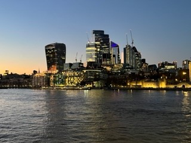

My favorite cities |
|
Home
|
LondonLondon, city, capital of the United Kingdom. It is among the oldest of the world’s great cities—its history spanning nearly two millennia—and one of the most cosmopolitan. By far Britain’s largest metropolis, it is also the country’s economic, transportation, and cultural centre.It is physically a polycentric city, with many core districts and no clear hierarchy among them. London has at least two (and sometimes many more) of everything: cities, mayors, dioceses, cathedrals, chambers of commerce, police forces, opera houses, orchestras, and universities.  |
Created by Olga, 2023 |
|